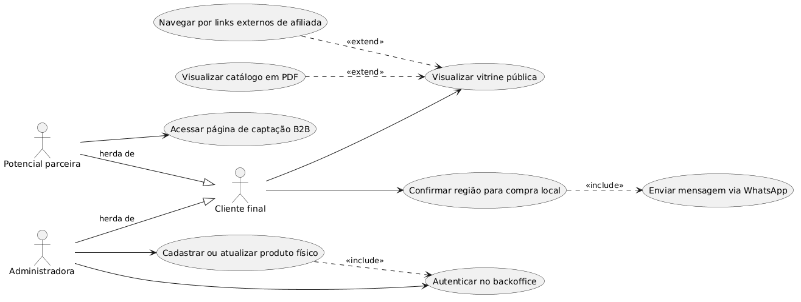

1ª Fase: Definição e Requisitos
Vitrine Virtual - Atlântica Natural
Contextualização e Modelagem Inicial do Problema
Antônio Prado Horta • Luiz Henrique Reis • Pedro Henrique de Freitas Frogeri
Disciplina: Laboratório de Engenharia de Software
Sumário
- 1. Minimundo (Contexto e Problema)
- 2. Requisitos Funcionais (RF)
- 3. Requisitos Não Funcionais (RNF)
- 4. Diagrama de Casos de Uso (DCU)
- 5. Descrição de Caso de Uso (Fluxos e Exceções)
Minimundo (Contexto e Problema)
A revendedora da Atlântica Natural atua de forma dispersa, misturando vendas de produtos físicos (pronta entrega) com links de afiliação e captação de novas parceiras comerciais (B2B) via WhatsApp e mídias sociais.
Problemas Atuais:
- Não existe um catálogo centralizado. Os clientes perguntam os preços repetidamente pelo WhatsApp.
- A revendedora recebe contatos de regiões distantes querendo "pronta entrega", o que é impossível logisticamente.
- Links para a matriz da empresa ficam perdidos em conversas e bio do Instagram.
A Necessidade:
- Criar um Hub Híbrido simples: uma vitrine virtual mobile-first onde o cliente consulta o estoque local, valida se a sua cidade faz parte da área de entrega (trava geográfica) e então é redirecionado ao WhatsApp com o pedido formatado.
- A mesma página deve agregar os links da matriz e formulários para captação B2B. A administração do sistema não terá gateway de pagamento nativo para reduzir escopo e custos.
Requisitos Funcionais (RF) - Parte 1
| ID | Descrição |
|---|---|
| RF01 | Exibir catálogo de produtos em estoque físico local na vitrine da página principal. |
| RF02 | Validar região de atendimento (trava geográfica) informada pelo cliente antes de liberar a compra. |
| RF03 | Redirecionar cliente aprovado para o WhatsApp com mensagem de compra pré-formatada. |
| RF04 | Bloquear redirecionamento de WhatsApp para clientes fora da região de cobertura ou que não validaram a cidade. |
| RF05 | Exibir links estáticos para compra na loja matriz (cauda longa e catálogo geral). |
| RF06 | Disponibilizar área ou botão para captação de novas revendedoras B2B (redirecionamento). |
Requisitos Funcionais (RF) - Parte 2
| ID | Descrição |
|---|---|
| RF07 | Acesso ao painel administrativo (Backoffice) restrito a usuários autenticados. |
| RF08 | Permitir o gerenciamento do estoque local de produtos (Cadastrar, Editar, Excluir, Visualizar). |
| RF09 | Controlar a disponibilidade do produto, permitindo inativá-lo para que não apareça na vitrine. |
| RF10 | Permitir o gerenciamento das categorias dos produtos (Criar, Editar, Excluir). |
| RF11 | Disponibilizar link/botão para visualização e download do catálogo oficial em formato PDF. |
| RF12 | Visualizar lista de contatos captados ou configurações básicas pelo painel (Escopo opcional do admin). |
Requisitos Não Funcionais (RNF)
Os três requisitos não funcionais mais relevantes e críticos para a sobrevivência e usabilidade do sistema:
- [RNF01] Usabilidade (Mobile-First): A interface pública da vitrine deve ser construída priorizando telas de smartphones, com botões de chamada-para-ação (CTAs) grandes, espaçados e legíveis.
- [RNF02] Segurança (Autenticação JWT): O sistema administrativo (Backoffice) e as rotas de API para manipulação de produtos devem ser blindadas, exigindo tokens válidos.
- [RNF03] Performance e Disponibilidade: A página principal (vitrine) deve ter carregamento extremamente rápido (menos de 3 segundos em conexões 4G) e ser leve.
Diagrama de Casos de Uso (DCU)

Descrição de Caso de Uso - Fluxo Principal
UC01 - Comprar Produto Pronta Entrega Local
| Ator(es) | Cliente Final |
| Pré-condição | O usuário acessou a vitrine virtual e o produto desejado está com o status "Ativo" (disponível). |
| Fluxo Principal |
|
Descrição de Caso de Uso - Fluxos de Exceção
UC01 - Comprar Produto Pronta Entrega Local
| Fluxo Alternativo |
[4a] Cidade Fora da Cobertura 1. No passo 4 do fluxo principal, a cidade digitada NÃO faz parte da região coberta. 2. O Sistema exibe o botão como "Bloqueado (Fora da Região)". 3. O Sistema não permite o redirecionamento de WhatsApp para aquele produto. |
| Subfluxo |
[3a] Campo Vazio 1. No passo 3 do fluxo principal, o Cliente não insere nada no campo de cidade. 2. O Sistema exibe o botão como "Bloqueado (Informe a Cidade)". 3. O Sistema exige o preenchimento antes de liberar qualquer ação. |